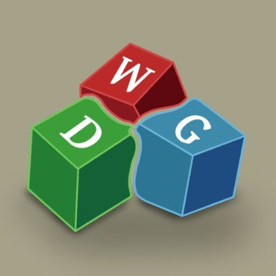

Dumb ways to get covid19
The Team
This game was developed by an initial group of people that would later become WeDoGames. The team consisted of 4 people, including myself. We were 3 programmers and 1 artist.
The Project
The game is a collection of mini-games, where the goal is to complete as many as you can before losing 3 times. Each mini-game you win gives you a score and speeds up the game a bit to increase the difficulty. There are 14 mini-games, and they are designed to be played only with the mouse.
The length of the project was 3 months and was successfully completed.

My Role
In this project, I was in charge of programming mechanics and build up some of the mini-games from them. I created 5 of the mini-games. Here are some of them: